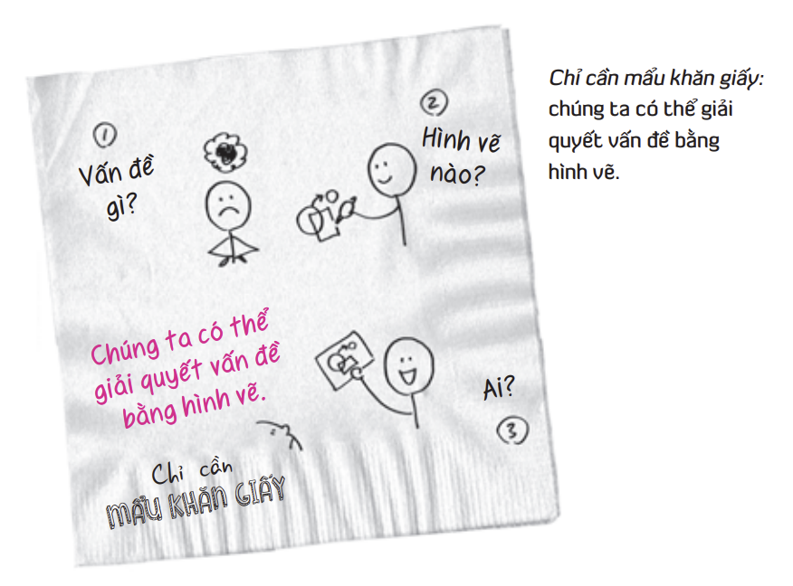
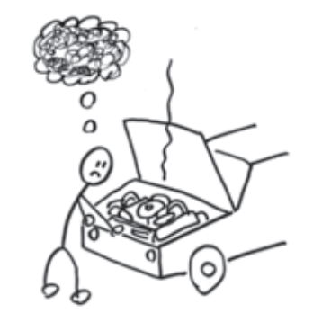

Chương 2: Ngày 1 - Nhìn
Tất cả các vấn đề (chiến lược, quản lý dự án, tài chính...) đều có thể giải quyết bằng hình vẽ đơn giản. Nếu bạn vẽ được một hình tròn, hình vuông và mũi tên, bạn đã có đủ công cụ để giải quyết vấn đề.
Khi buổi hội thảo bắt đầu, tôi trình bày các công cụ tư duy hình ảnh, sau đó yêu cầu các nhà điều hành chia thành các nhóm nhỏ để họ có thể vẽ ra những ý tưởng của riêng mình. Đến trưa, hàng chục hình vẽ được treo trên tường, thể hiện những gì đang diễn ra trên thị trường, và quan trọng hơn là những gì mà AmericanWay có thể làm để đối mặt với nó.
Chúng ta có thể giải quyết những vấn đề nào bằng hình vẽ? Câu trả lời đơn giản là tất cả các vấn đề. Ví dụ: các vấn đề chiến lược, các vấn đề về quản lý dự án, phân bổ nguồn nhân lực, các vấn đề chính trị, tài chính – trên thực tế, bất cứ vấn đề nào mà chúng ta có thể diễn đạt đều có thể được trình bày một cách rõ ràng hơn rất nhiều, nếu không nói là giải quyết ngay lập tức, bằng hình vẽ.

Rồi có điều gì đó bỗng ám ảnh tôi: khi thử phác họa một vài hình ảnh làm ví dụ, tôi đã chuyển nội dung cuộc hội thảo từ một bài tập tư duy định hướng mục tiêu sang buổi tư duy hình ảnh về những gì đang diễn ra trong thế giới thực. Tôi vẫn sử dụng các công cụ và quy tắc tư duy hình ảnh tương tự, chỉ thay đổi kiểu câu hỏi.
Sử dụng chức năng vẽ trên máy tính bảng, tôi đã thay đổi một số hình ảnh phác họa trong bài phát biểu. Trong vòng 30 phút, tôi đã biến một buổi hội thảo chứa đầy khái niệm thành một cuộc trò chuyện thực tế. Dù không nắm rõ chi tiết về tình hình tài chính bên trong AmericanWay, nhưng tôi nghĩ là không cần thiết: những người tham dự đều biết rất rõ. Kinh nghiệm mách bảo rằng tôi chỉ cần thiết lập đúng khuôn khổ và khởi điểm của vấn đề.

Các vị giám đốc điều hành ở đây sẽ phác họa được tình hình hiện tại và tương lai của AmericanWay một cách rõ nét hơn bất kỳ ai khác. Chúng ta không cần phải là một nghệ sĩ để có thể vẽ. Thực tế, những hình vẽ càng đơn giản thì thông điệp càng được truyền tải mạnh mẽ.

Kết thúc ngày đầu tiên, chúng ta đã hiểu rằng: Nhìn không chỉ là tiếp nhận ánh sáng vào mắt, mà là quá trình chủ động tìm kiếm các mô hình và cấu trúc trong mớ hỗn độn của thông tin.